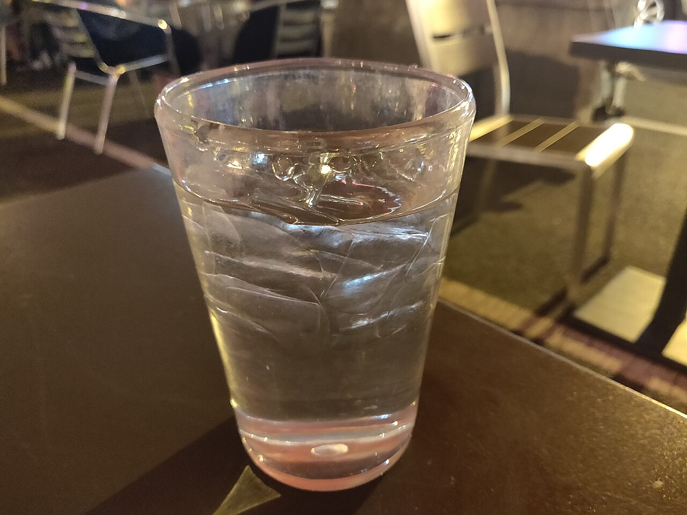
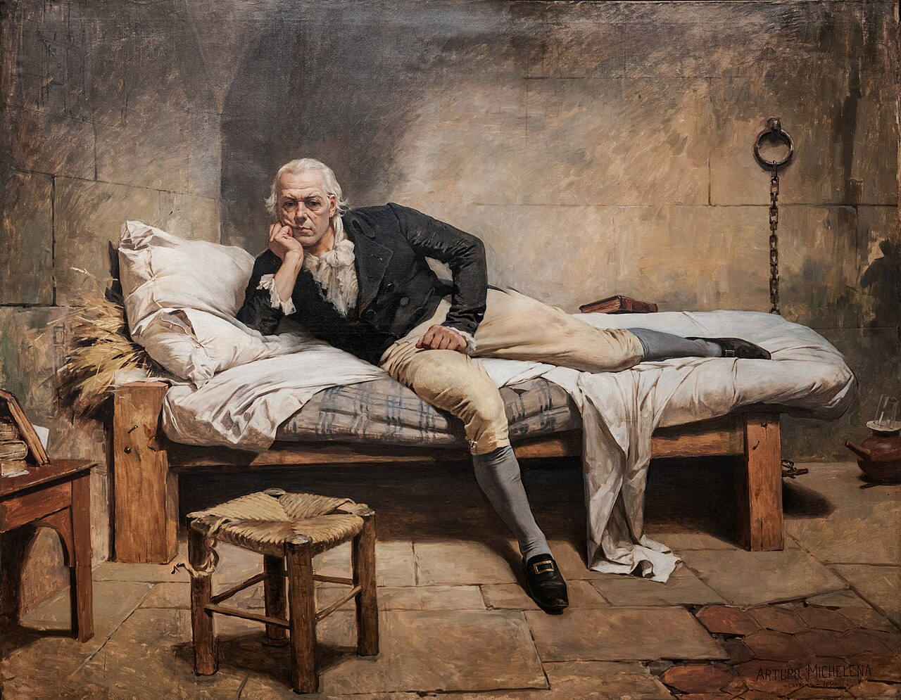
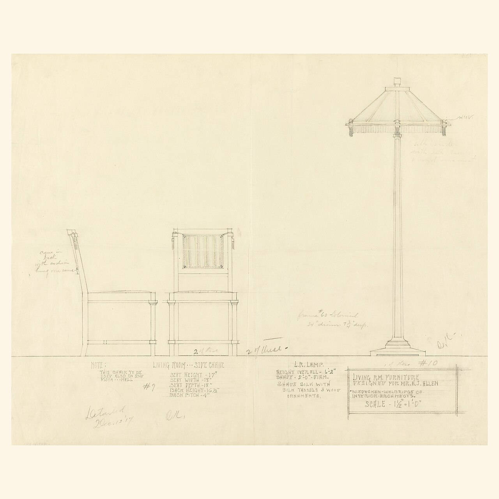
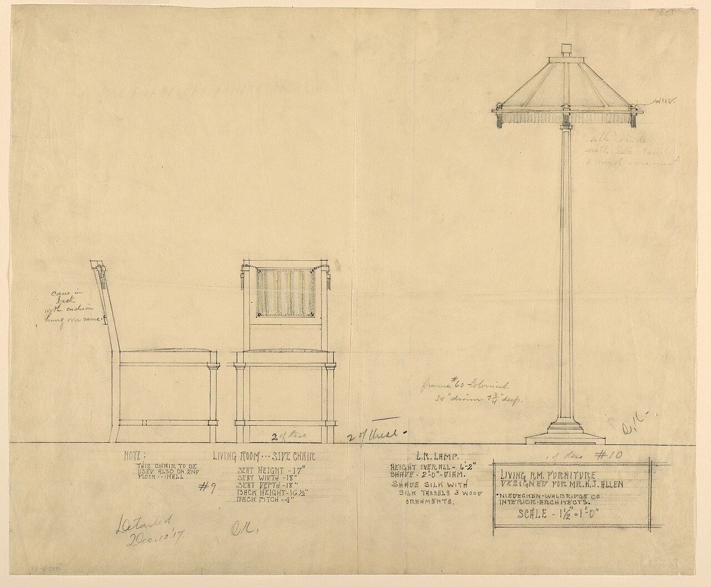
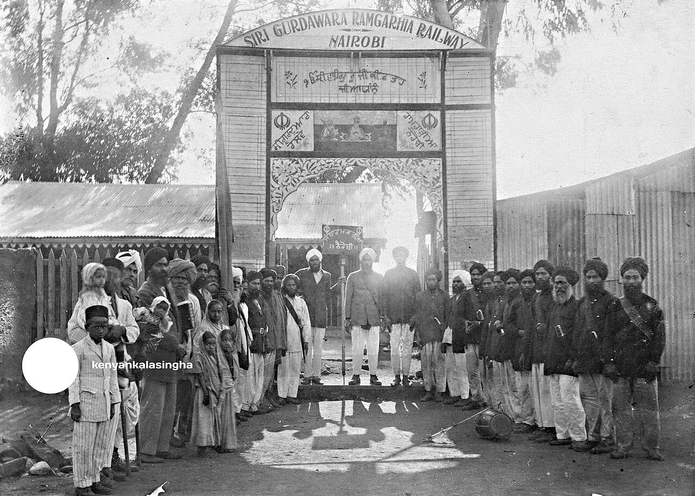

#008 · producto · horizontal · 4608x3456 · CC0 File:Glass of water ouside.jpg · 1280x960 https://commons.wikimedia.org/wiki/File:Glass_of_water_ouside.jpg

#009 · producto · horizontal · 4608x3456 · CC0 File:Glass of water ouside 2.jpg · 1280x960 https://commons.wikimedia.org/wiki/File:Glass_of_water_ouside_2.jpg

#010 · producto · horizontal · 6170x4796 · Public domain File:Miranda en la Carraca by Arturo Michelena.jpg · 1280x995 https://commons.wikimedia.org/wiki/File:Miranda_en_la_Carraca_by_Arturo_Michelena.jpg

#011 · producto · cuadrada · 3000x3000 · Public domain File:Drawing, Living Room Furniture, Henry J. Allen Residence, Wichita, Kansas, 1917 (CH 18800277).jpg · 1280x1280 https://commons.wikimedia.org/wiki/File:Drawing,_Living_Room_Furniture,_Henry_J._Allen_Residence,_Wichita,_Kansas,_1917_(CH_18800277).jpg

#012 · producto · horizontal · 4096x3379 · Public domain File:Drawing, Living Room Furniture, Henry J. Allen Residence, Wichita, Kansas, 1917 (CH 18800277-2).jpg · 1280x1056 https://commons.wikimedia.org/wiki/File:Drawing,_Living_Room_Furniture,_Henry_J._Allen_Residence,_Wichita,_Kansas,_1917_(CH_18800277-2).jpg

#013 · producto · horizontal · 2048x1462 · Public domain File:Photograph of Kenyan Sikh pioneers in-front of Gurdwara Sahib Railway Landhies in Nairobi, Kenya, 1903.jpg · 1280x914 https://commons.wikimedia.org/wiki/File:Photograph_of_Kenyan_Sikh_pioneers_in-front_of_Gurdwara_Sahib_Railway_Landhies_in_Nairobi,_Kenya,_1903.jpg
#022 · vertical · vertical · 2967x4096 · Public domain File:Drawing, Design for the Painted Decoration of the Walls and Ceiling of a Living Room, 1820 (CH 18558913).jpg · 1280x1767 https://commons.wikimedia.org/wiki/File:Drawing,_Design_for_the_Painted_Decoration_of_the_Walls_and_Ceiling_of_a_Living_Room,_1820_(CH_18558913).jpg